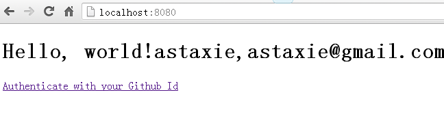
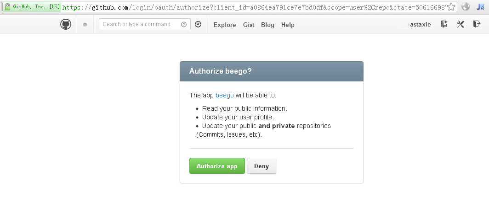
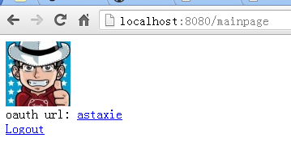

14.4 用户认证
在开发Web应用过程中，用户认证是开发者经常遇到的问题，用户登录、注册、登出等操作，而一般认证也分为三个方面的认证
- HTTP Basic和 HTTP Digest认证
- 第三方集成认证：QQ、微博、豆瓣、OPENID、google、github、facebook和twitter等
- 自定义的用户登录、注册、登出，一般都是基于session、cookie认证
beego目前没有针对这三种方式进行任何形式的集成，但是可以充分的利用第三方开源库来实现上面的三种方式的用户认证，不过后续beego会对前面两种认证逐步集成。
HTTP Basic和 HTTP Digest认证
这两个认证是一些应用采用的比较简单的认证，目前已经有开源的第三方库支持这两个认证：
github.com/abbot/go-http-auth
下面代码演示了如何把这个库引入beego中从而实现认证：
package controllers
import (
"github.com/abbot/go-http-auth"
"github.com/astaxie/beego"
)
func Secret(user, realm string) string {
if user == "john" {
// password is "hello"
return "$1$dlPL2MqE$oQmn16q49SqdmhenQuNgs1"
}
return ""
}
type MainController struct {
beego.Controller
}
func (this *MainController) Prepare() {
a := auth.NewBasicAuthenticator("example.com", Secret)
if username := a.CheckAuth(this.Ctx.Request); username == "" {
a.RequireAuth(this.Ctx.ResponseWriter, this.Ctx.Request)
}
}
func (this *MainController) Get() {
this.Data["Username"] = "astaxie"
this.Data["Email"] = "astaxie@gmail.com"
this.TplNames = "index.tpl"
}
上面代码利用了beego的prepare函数，在执行正常逻辑之前调用了认证函数，这样就非常简单的实现了http auth，digest的认证也是同样的原理。
oauth和oauth2的认证
oauth和oauth2是目前比较流行的两种认证方式，还好第三方有一个库实现了这个认证，但是是国外实现的，并没有QQ、微博之类的国内应用认证集成：
github.com/bradrydzewski/go.auth
下面代码演示了如何把该库引入beego中从而实现oauth的认证，这里以github为例演示：
添加两条路由
beego.RegisterController("/auth/login", &controllers.GithubController{}) beego.RegisterController("/mainpage", &controllers.PageController{})然后我们处理GithubController登陆的页面：
package controllers import ( "github.com/astaxie/beego" "github.com/bradrydzewski/go.auth" ) const ( githubClientKey = "a0864ea791ce7e7bd0df" githubSecretKey = "a0ec09a647a688a64a28f6190b5a0d2705df56ca" ) type GithubController struct { beego.Controller } func (this *GithubController) Get() { // set the auth parameters auth.Config.CookieSecret = []byte("7H9xiimk2QdTdYI7rDddfJeV") auth.Config.LoginSuccessRedirect = "/mainpage" auth.Config.CookieSecure = false githubHandler := auth.Github(githubClientKey, githubSecretKey) githubHandler.ServeHTTP(this.Ctx.ResponseWriter, this.Ctx.Request) }
处理登陆成功之后的页面
package controllers import ( "github.com/astaxie/beego" "github.com/bradrydzewski/go.auth" "net/http" "net/url" ) type PageController struct { beego.Controller } func (this *PageController) Get() { // set the auth parameters auth.Config.CookieSecret = []byte("7H9xiimk2QdTdYI7rDddfJeV") auth.Config.LoginSuccessRedirect = "/mainpage" auth.Config.CookieSecure = false user, err := auth.GetUserCookie(this.Ctx.Request) //if no active user session then authorize user if err != nil || user.Id() == "" { http.Redirect(this.Ctx.ResponseWriter, this.Ctx.Request, auth.Config.LoginRedirect, http.StatusSeeOther) return } //else, add the user to the URL and continue this.Ctx.Request.URL.User = url.User(user.Id()) this.Data["pic"] = user.Picture() this.Data["id"] = user.Id() this.Data["name"] = user.Name() this.TplNames = "home.tpl" }
整个的流程如下，首先打开浏览器输入地址：

图14.4 显示带有登录按钮的首页
然后点击链接出现如下界面：

图14.5 点击登录按钮后显示github的授权页
然后点击Authorize app就出现如下界面：

图14.6 授权登录之后显示的获取到的github信息页
自定义认证
自定义的认证一般都是和session结合验证的，如下代码来源于一个基于beego的开源博客：
//登陆处理
func (this *LoginController) Post() {
this.TplNames = "login.tpl"
this.Ctx.Request.ParseForm()
username := this.Ctx.Request.Form.Get("username")
password := this.Ctx.Request.Form.Get("password")
md5Password := md5.New()
io.WriteString(md5Password, password)
buffer := bytes.NewBuffer(nil)
fmt.Fprintf(buffer, "%x", md5Password.Sum(nil))
newPass := buffer.String()
now := time.Now().Format("2006-01-02 15:04:05")
userInfo := models.GetUserInfo(username)
if userInfo.Password == newPass {
var users models.User
users.Last_logintime = now
models.UpdateUserInfo(users)
//登录成功设置session
sess := globalSessions.SessionStart(this.Ctx.ResponseWriter, this.Ctx.Request)
sess.Set("uid", userInfo.Id)
sess.Set("uname", userInfo.Username)
this.Ctx.Redirect(302, "/")
}
}
//注册处理
func (this *RegController) Post() {
this.TplNames = "reg.tpl"
this.Ctx.Request.ParseForm()
username := this.Ctx.Request.Form.Get("username")
password := this.Ctx.Request.Form.Get("password")
usererr := checkUsername(username)
fmt.Println(usererr)
if usererr == false {
this.Data["UsernameErr"] = "Username error, Please to again"
return
}
passerr := checkPassword(password)
if passerr == false {
this.Data["PasswordErr"] = "Password error, Please to again"
return
}
md5Password := md5.New()
io.WriteString(md5Password, password)
buffer := bytes.NewBuffer(nil)
fmt.Fprintf(buffer, "%x", md5Password.Sum(nil))
newPass := buffer.String()
now := time.Now().Format("2006-01-02 15:04:05")
userInfo := models.GetUserInfo(username)
if userInfo.Username == "" {
var users models.User
users.Username = username
users.Password = newPass
users.Created = now
users.Last_logintime = now
models.AddUser(users)
//登录成功设置session
sess := globalSessions.SessionStart(this.Ctx.ResponseWriter, this.Ctx.Request)
sess.Set("uid", userInfo.Id)
sess.Set("uname", userInfo.Username)
this.Ctx.Redirect(302, "/")
} else {
this.Data["UsernameErr"] = "User already exists"
}
}
func checkPassword(password string) (b bool) {
if ok, _ := regexp.MatchString("^[a-zA-Z0-9]{4,16}$", password); !ok {
return false
}
return true
}
func checkUsername(username string) (b bool) {
if ok, _ := regexp.MatchString("^[a-zA-Z0-9]{4,16}$", username); !ok {
return false
}
return true
}
有了用户登陆和注册之后，其他模块的地方可以增加如下这样的用户是否登陆的判断：
func (this *AddBlogController) Prepare() {
sess := globalSessions.SessionStart(this.Ctx.ResponseWriter, this.Ctx.Request)
sess_uid := sess.Get("userid")
sess_username := sess.Get("username")
if sess_uid == nil {
this.Ctx.Redirect(302, "/admin/login")
return
}
this.Data["Username"] = sess_username
}